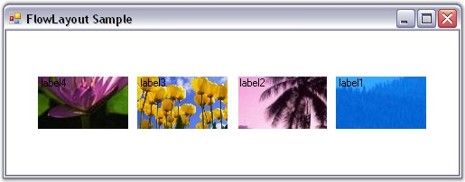
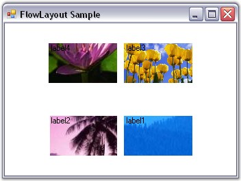

This topic illustrates how to center the Child controls both vertically and horizontally using the Child constraints.
 Note: Constraints need to be used because
the Child controls will otherwise be centered either vertically or horizontally
based on whether the layout mode is 'Vertical' or 'Horizontal'.
Note: Constraints need to be used because
the Child controls will otherwise be centered either vertically or horizontally
based on whether the layout mode is 'Vertical' or 'Horizontal'.
When the layout mode is 'Horizontal', set the HAlign property to 'Center' and ProportionalRowHeight property to 'True' in the constraints for all the Child controls. This will center the Child controls vertically and horizontally as shown.
|
[C#]
this.flowLayout1.SetConstraints(this.textBox1, new Syncfusion.Windows.Forms.Tools.FlowLayoutConstraints(true, Syncfusion.Windows.Forms.Tools.HorzFlowAlign.Center, Syncfusion.Windows.Forms.Tools.VertFlowAlign.Center, false, false, true)); |
|
[VB.NET]
Me.flowLayout1.SetConstraints(Me.textBox1, New Syncfusion.Windows.Forms.Tools.FlowLayoutConstraints(True, Syncfusion.Windows.Forms.Tools.HorzFlowAlign.Center, Syncfusion.Windows.Forms.Tools.VertFlowAlign.Center, False, False, True)) |

Figure 676: Centered Controls in Horizontal FlowLayout
When the ProportionalRowHeight property is set to 'True', any extra space at the bottom will be equally distributed among all the available rows, thereby increasing the logical height of the rows. The Child controls within these rows will then vertically align to the center of the row (since VAlign property is set to 'Center', by default), thereby resulting in the layout seen above.
When resized to a smaller width, two rows are created resulting in the layout shown below.

Figure 677: Centered Controls in Horizontal FlowLayout in Multiple Rows
See Also
Configuring FlowLayout, FlowLayout - Configuring Child Controls, Enabling Constrained FlowLayout on a Container